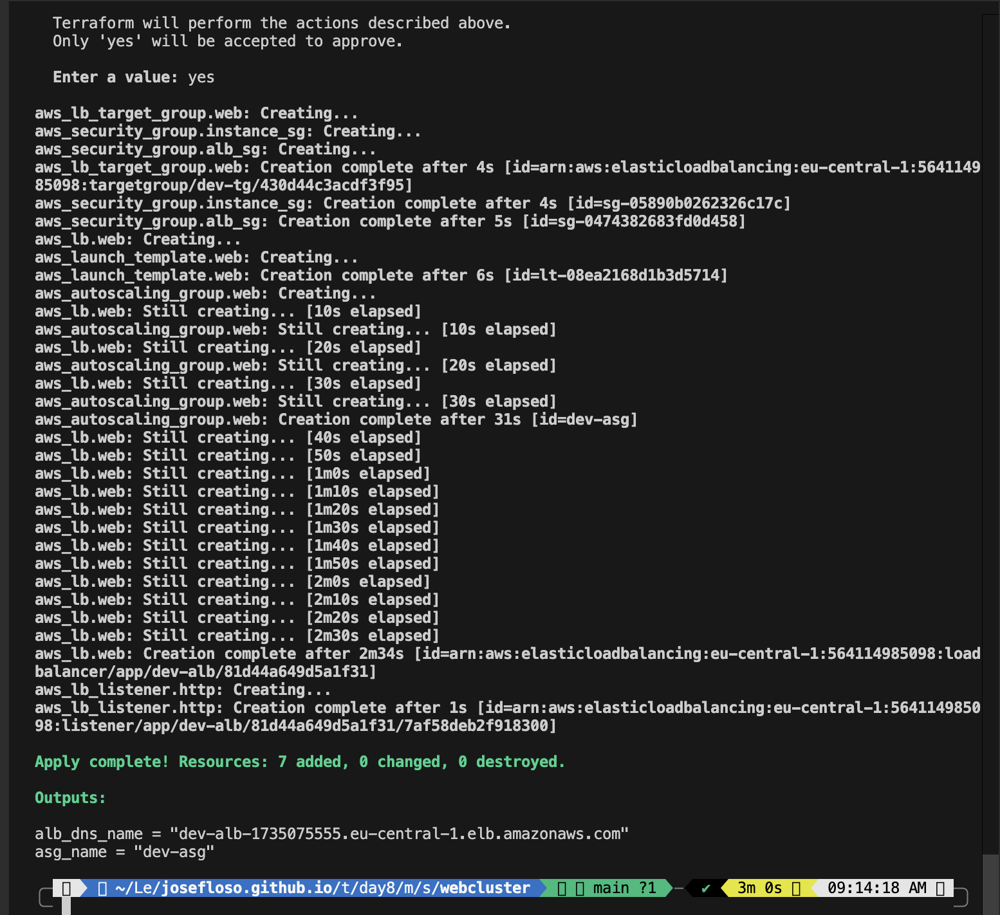
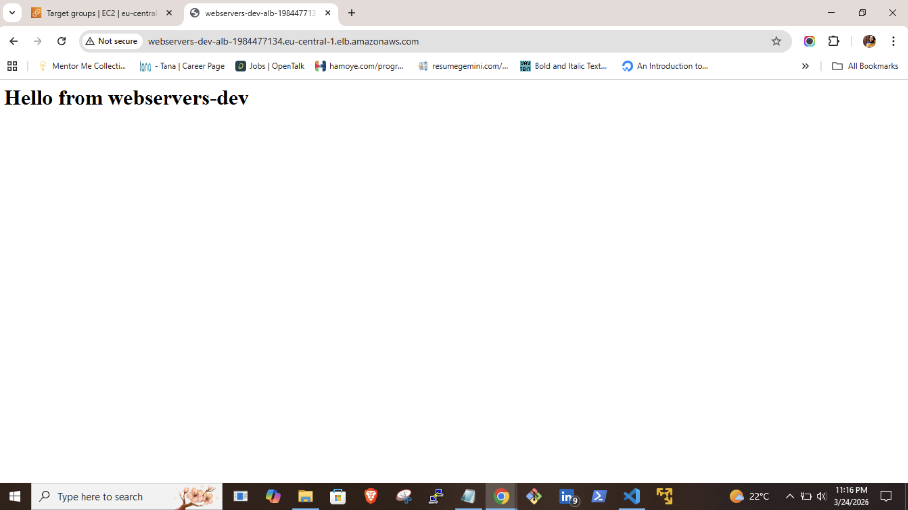
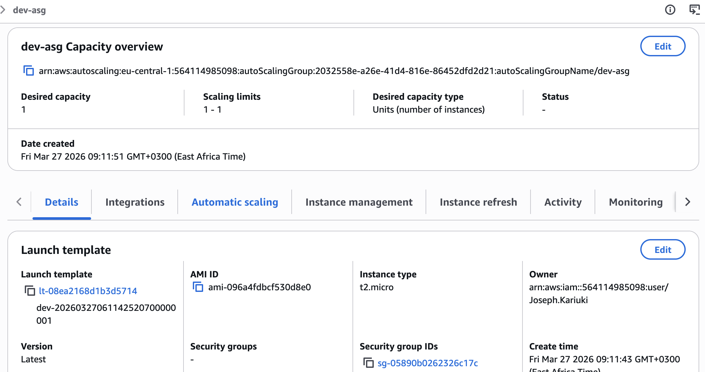

I’ve been working on structuring my Terraform code properly instead of just making things work. This setup is a simple web server cluster behind an Application Load Balancer, but the goal wasn’t just to deploy it — it was to make it reusable.
Everything runs in the default VPC for simplicity.
Internet → ALB → Target Group → Auto Scaling Group → EC2 (Apache)
Originally, the AMI was hardcoded:
image_id = "ami-0cebfb1f908092578"
This breaks portability and becomes outdated quickly.
I switched to using AWS SSM to dynamically fetch the latest Amazon Linux AMI:
data "aws_ssm_parameter" "amazon_linux" {
name = "/aws/service/ami-amazon-linux-latest/al2023-ami-kernel-default-x86_64"
}
image_id = data.aws_ssm_parameter.amazon_linux.value
The launch template installs Apache using Amazon Linux:
#!/bin/bash
dnf update -y
dnf install -y httpd
systemctl start httpd
systemctl enable httpd
echo "<h1>Hello from cluster</h1>" > /var/www/html/index.html
The ALB listens on port 80 and forwards traffic:
resource "aws_lb_listener" "http" {
port = 80
protocol = "HTTP"
}
The ASG ensures instances are always running:
resource "aws_autoscaling_group" "web" {
min_size = 2
max_size = 5
}
The ALB allows HTTP from anywhere, and the instance security group allows traffic on the app port. This is fine for testing, but not for production.
The setup is parameterized using variables:
This setup is simple, but it forces better structure. The main takeaway is not to hardcode things that AWS already manages.
Terraform Apply Output:

Load Balancer in Browser:

Target Group Health:
